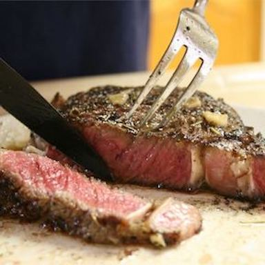

AirFryer RibEye

Delicous ribeye steak cooked by air fryer
Ingredients
- rib-eye steak 250g
- mix steak seasoning 1tsp(4g) or chinese bbq seasoner 4g
- butter 10g
Steps
- Combine steak, seasoning and butter in a large resealable bag. Marinate meat for at least 2 hours.
- Remove steaks from the bag and discard marinade. Pat excess oil off steaks.
- Add about 1 tablespoon water to the bottom of the air fryer pan to prevent it from smoking during cooking. Preheat the air fryer to 400 degrees F (200 degrees C).
- Cook steaks in the preheated air fryer for 7 minutes, flip, and cook about 7 minutes more for medium-rare. For a medium, cook 8 minutes per side.
- Let steaks sit for about 5 minutes before serving.